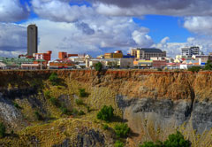
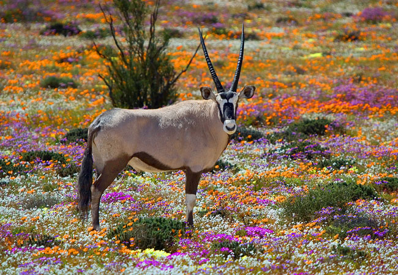
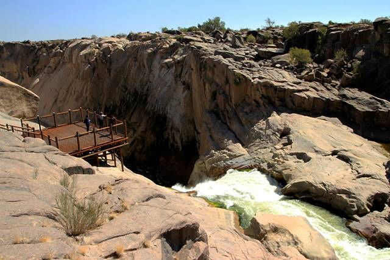

The Northern Cape is home to the famous red desert, "The Kalahari"
and the diamond feilds around Kimberley. If you like flowers you
should visit the Namaqualand after a rain shower, simply breathtaking.
  Above are images of the diamond mining town of Kimberley, a Gemsbok
surrounded by the flowers of Namaqualand, and the iconic Augrabies
Falls.